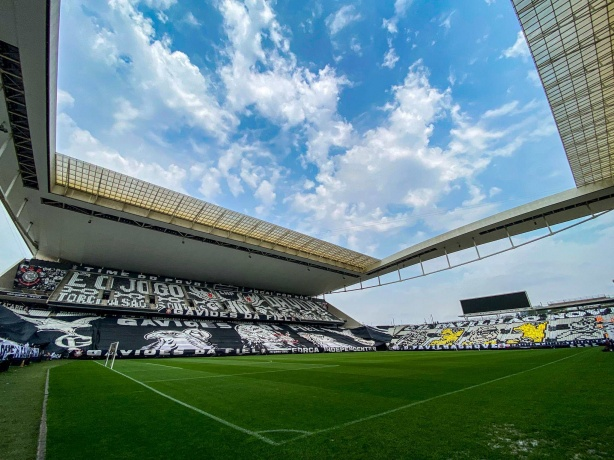
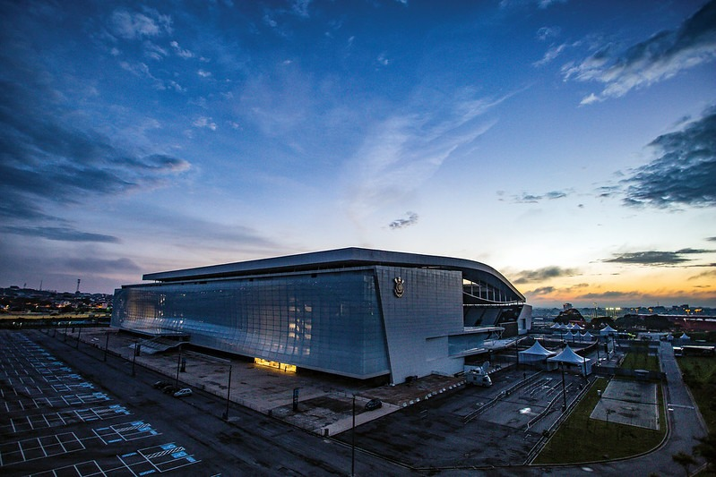

Neo Química Arena
Conhecida como "Casa do Povo", a Neo Química Arena é o estádio oficial do Corinthians, localizado em Itaquera, na zona leste de São Paulo.
| Informação | Dado |
|---|---|
| Inauguração | 18 de maio de 2014 |
| Localização | Itaquera, São Paulo |
| Capacidade atual | 48.905 lugares |
| Apelido | Casa do Povo |
| Recorde de público | 63.267 (Copa do Mundo 2014) |

